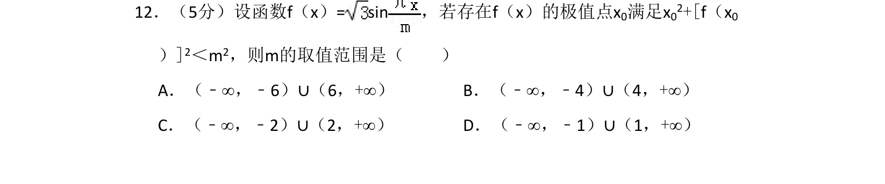
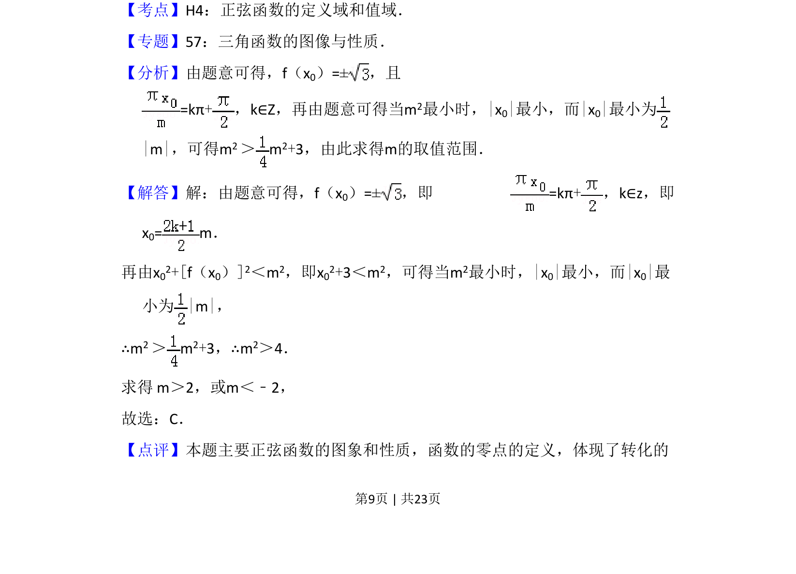
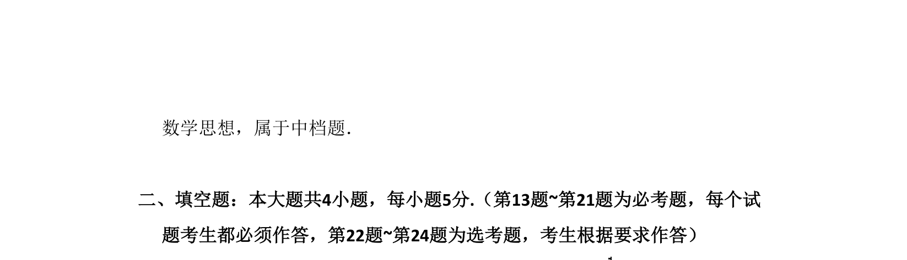

考点：正弦函数的极值点 不等式求解 转化思想

本题通过正弦函数极值点构造不等式，求参数 m 的取值范围。


📄 原 PDF 第 9 页：
素材/真题/吉林/2008-2024·（吉林）数学高考真题/2014年高考数学试卷（理）（新课标Ⅱ）（解析卷）.pdf
12．（5分）设函数f（x）= sin，若存在f（x）的极值点x 0满足x02+[f（x0 ）]2＜m2，则m的取值范围是（ ） A．（﹣∞，﹣6）∪（6，+∞）B．（﹣∞，﹣4）∪（4，+∞） C．（﹣∞，﹣2）∪（2，+∞）D．（﹣∞，﹣1）∪（1，+∞）
【考点】H4：正弦函数的定义域和值域．菁优网版权所有 【专题】57：三角函数的图像与性质． 【分析】由题意可得，f（x0）=±，且 =kπ+，k∈Z，再由题意可得当m 2最小时，|x0|最小，而|x0|最小为 |m|，可得m2 ＞m 2+3，由此求得m的取值范围． 【解答】解：由题意可得，f（x0）=±，即 =kπ+，k∈z，即 x0= m． 再由x02+[f（x0）]2＜m2，即x02+3＜m2，可得当m2最小时，|x0|最小，而|x0|最 小为|m|， ∴m2 ＞m 2+3，∴m2＞4． 求得 m＞2，或m＜﹣2， 故选：C． 【点评】本题主要正弦函数的图象和性质，函数的零点的定义，体现了转化的